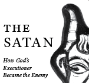

I have been typesetting and designing books since 2016. My specialty is religious academic books. Here you'll find a small selection of my past work.
The Satan
 Can I Get
a Witness
The End of the
Beginning
I Bring the Voices
of My People
Introducing the
Old Testament

Advent
Acorns
Untitled
I’ve worked on hundreds of titles, many of which I handled at every stage of production from preparing the manuscript for typesetting to posting final print-ready files—so I am well versed in
- Styling manuscripts and preparing them for typesetting
- Setting up stable and sustainable long-text documents in Adobe InDesign
- Building templates for multi-volume series
- Using GREP expressions and scripts to clean up texts
- Handling typesetting peculiarities e.g. bidirectional text
- Creating attractive and readable interior designs
- Solving design challenges for uniquely complex volumes
- Designing to specs for pre-existing series
- Vetting images and preparing them for placement
- Recreating author-submitted drawings in a polished, printable format
- Inputing editorial corrections and maintaining strict version control
- Setting complex academic indexes
- Producing and reviewing print-ready files
- Maintaining a sharp editorial eye for the details at all stages of production